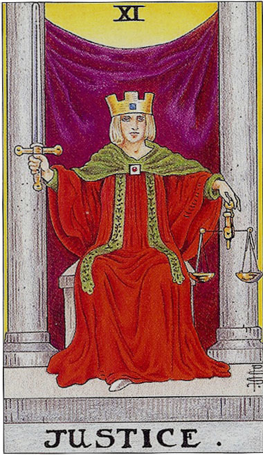
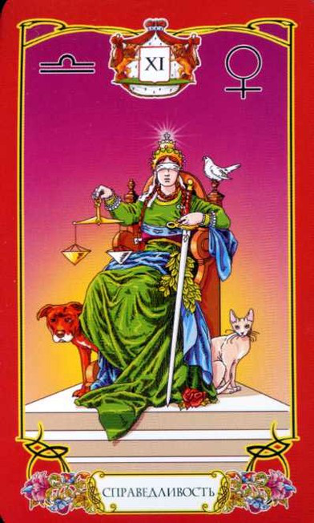
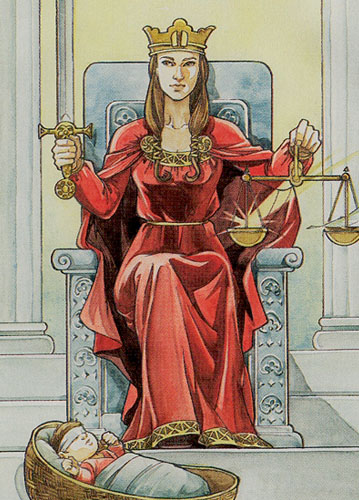
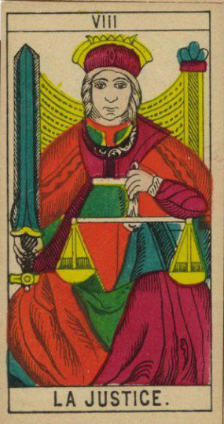
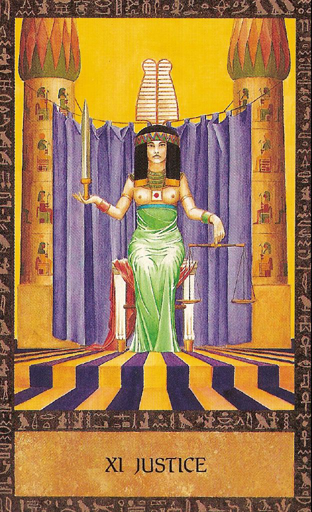
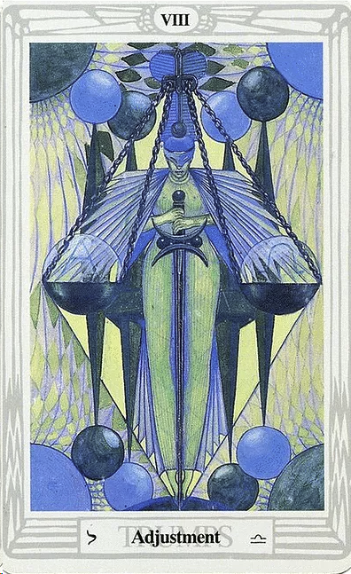
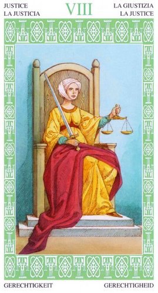
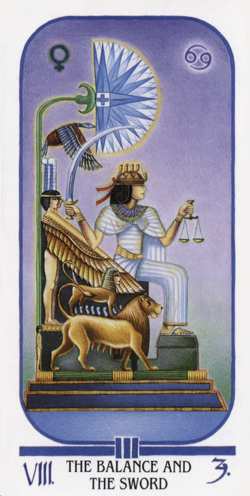
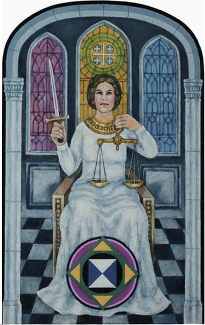

То что арканы Сила и Правосудие поменяны местами, я заметила, интересно укзнать почему так.
детали на карте (таро Уэйта):
Женщина сидящая на троне между колоннами. Карта перекликается с императором - трон,т.е Власть, Закон. И с арканом Жрица - колонны и зановеска заней. В Жрице занавеска и колонны символизировали дверь в мир безсознательного, в Справделтвости кмк- путь в Мир там где есть правила, заповеди, законы...
На одной карте женщина восседает на троне, в руках ее меч, а рядом люлька с ребенком. Вспомниласьь притча про царя Соломона, когда к нему пришли две женщины с просьбой рассудить чей ребенок, Соломон предложил разрубить ребенка пополам, одна женщина решила выйти из спора, лишь бы ребенок остался жив, Соломон принял решение отдать ребенка именно этой женщине, так как понял, что ребенко ее.
Мифическое таро.
Афина восседает на троне, в ее руках меч, на ее плече белая сова, символ мудрости. Афина богиня войны, но в отличии от Марса (Ареса) не стремилась к яростным кровопролитным битвам, а наооборот измегала их, придерживалась стратегии, мудрости, рационального мышления, логики, организованных боевых действий и опиралась на дипломатию. Другими словами, умение держать инстикты по контролем, а опираться на холодный ум, сражаться за принципы, а не за эмоции.
Кроули:
Кроули изобразил Баланс, Женщина на носочках стоит опираясь на меч, словно эквилебрист в цирке.
цвет: красный (у Уэйта: красная мантия, занавеска - закон, власть), синий - идеи, мышление, логика, холодность, отдаленность. Зеленый - рост, энергие перехода из идеи в рост чего-то.
фигура:
Ромб или треуглник стоящий на вершине
символ:
схематичеки нарисованные весы
буква:
Ф, Т, Ж (по принципу семмитричности относительно центрально прямой черты)
ощущения
ответсвенность за свои действия, получить по заслугам, наказание неотвратимо, но также и награда будет справдливой. Голос совести. Та ситуация, когда ничего не скроится и все будет по справделивости, если тебе кто-то сделал плохо, ему воздасться, если же ты сам кого-то обидел, самое время раскается, повиниться и исправить сиитуацию. То ощущщение, когда получаешь искреннюю обратную связь. не лесть, а именно качественную обратную связь.
ключевые слова:
"Встаньте, суд идет!", рановесие, баланс, справедливость
запах:
например запах герани (помню из астрологии, что это вродже бы запах весов)
звук:
вкус:
гвоздики
астрология:
Марс (Овен, Скорпион)
мифология:
герои-победители-триумфаторы:
Александр Македонский
можно вспомнить миф о Фаэтоне, которые решил взять колесницу отца Гелиоса.
Фразы: Сквозь теринии к звездам
способности: концентрироваться перд чем-то важным
окружение: пружина, меч
амулеты: Спротсмены одевают на олимпиаду, вспомнился один такой, который одевал материнский платок под футболку.
любое оружие